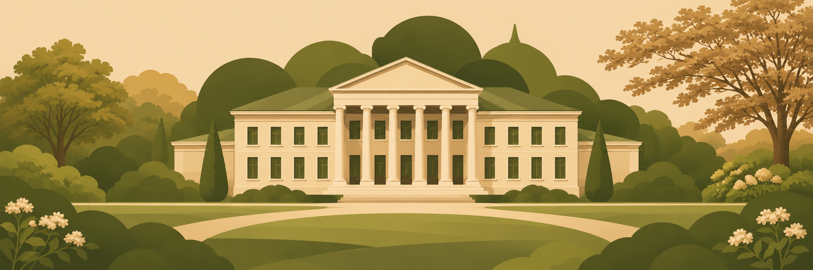
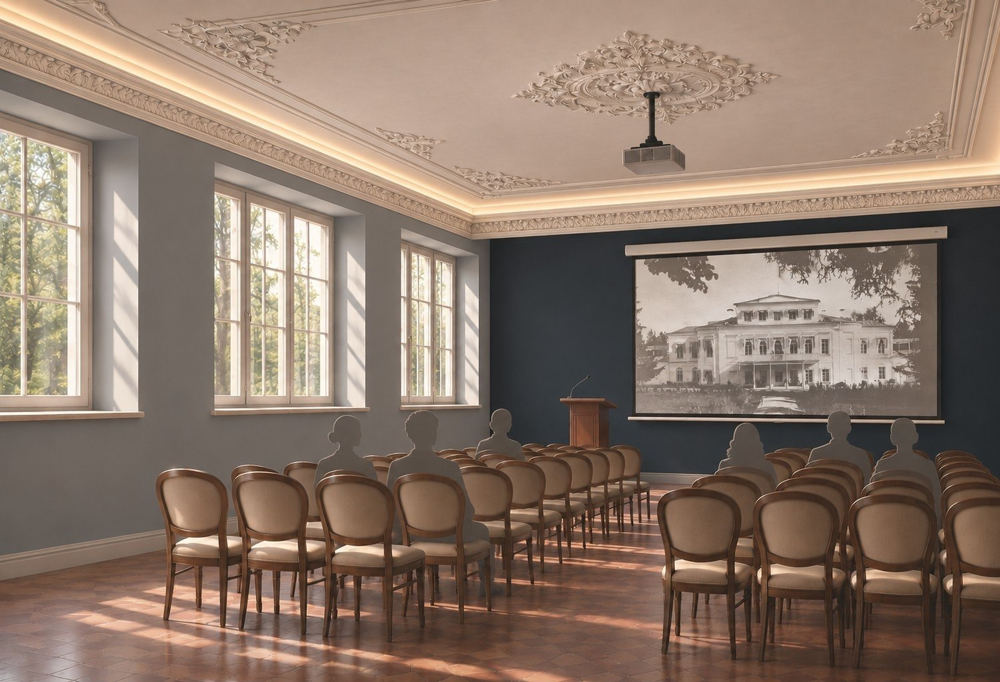
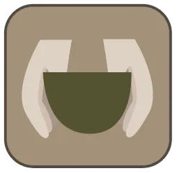
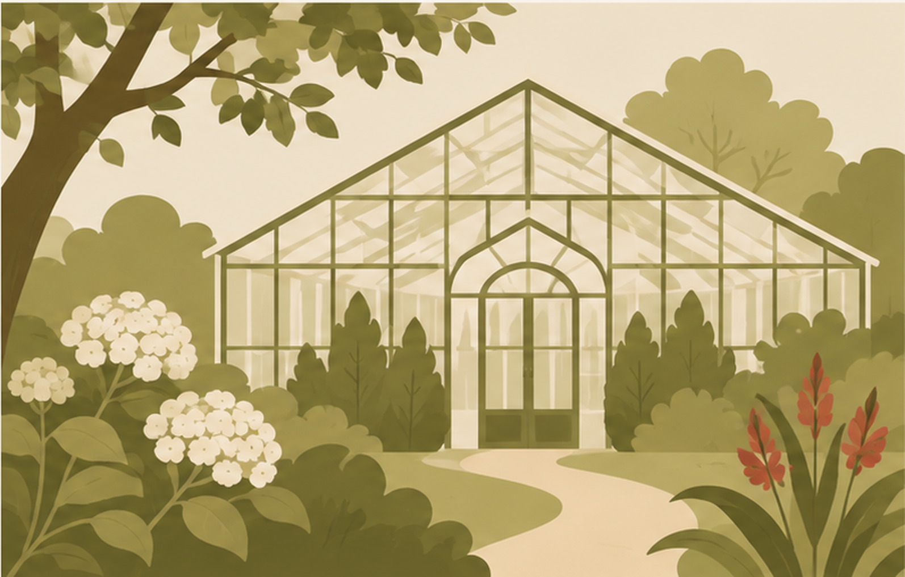
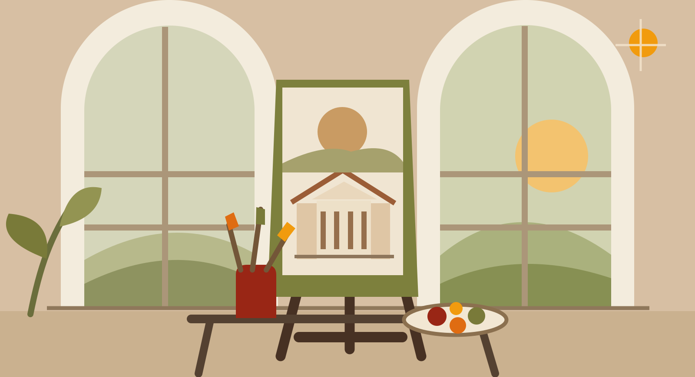

ЭкскурсияЭкскурсии
Михайловское:
диалог времён
Знакомство с историей Михайловского, усадебной архитектурой и традицией изучения природы.
Место, где история вдохновляет на открытия
Знакомьтесь с историей усадьбы в музее, гуляйте по парку и приходите на лекции, выставки и творческие занятия.
Выбрать программуЗнакомство
с усадьбой
В Михайловском можно провести день по-разному: осмотреть экспозиции главного дома, зайти на выставку во флигели, освоить новую творческую технику или отправиться на ботаническую прогулку. Выбирайте то, что интересно вам.
Выбрать занятие
История Михайловского тесно связана с изучением природы и просвещением.
Деятельность Екатерины Павловны Шереметевой, естественно-исторический музей и ботанический сад — важные темы в истории усадьбы. Экспозиции знакомят с этим наследием и интересом к природе, который объединял исследование и образование.
Сегодня эту традицию продолжают музейные программы, лекции и ботанические занятия. Здесь можно не только узнать об усадьбе, но и попробовать себя в роли наблюдателя, исследователя или художника.
Познакомьтесь с историей Михайловского
в экспозициях главного дома.
Узнать историю, изучить природу
или попробовать себя в творчестве.
Выберите интересующую тему.
Познакомьтесь с прошлым Михайловского на экскурсиях и в музейных экспозициях.
01Узнайте, как наблюдение за природой помогает исследовать окружающий мир.
02
Изучайте растения на ботанических прогулках и образовательных занятиях.
03Рисуйте, пробуйте творческие техники и знакомьтесь с выставками во флигелях.
04Приходите на лекции об истории, природе и культуре, чтобы разобраться в интересующей теме.
05Выбирайте выставки, тематические встречи и программы для совместного посещения.
06Выберите формат по интересам:
экскурсию, лекцию или занятие.

ЭкскурсияЭкскурсии
Знакомство с историей Михайловского, усадебной архитектурой и традицией изучения природы.
 Выставка
ВыставкаВыставки
Выставка о том, как люди наблюдают природу, исследуют её и сохраняют знания.

ЛекторийЛекции
Лекция о растениях, ботанических коллекциях и том, чему можно научиться у сада.

Мастер-классМастер-классы
Мастер-класс по рисунку: замечаем детали архитектуры и растений и переносим их на бумагу.
 Для детей
Для детейДля детей
Занятие для детей: наблюдаем, сравниваем и ищем ответы на вопросы о природе.
 Прогулка в парке
Прогулка в паркеБотанические программы
Ботаническая прогулка: рассматриваем листья, сравниваем формы и замечаем сезонные изменения.
Для первого знакомства с усадьбой подойдёт экскурсия «Михайловское: диалог времён».
Продолжите знакомство с усадьбой
под открытым небом
В парке можно пройти тематический маршрут или просто погулять среди деревьев. Исторические прогулки знакомят с усадьбой, ботанические — с растениями, а наблюдение за природой помогает заметить детали, мимо которых легко пройти.
На прогулке знакомимся с усадебным пространством и его историей. Рассматриваем связь главного дома и парка, говорим о культурной и научно-просветительской жизни Михайловского.
Тематическая прогулкаДля прогулки выбирайте удобную обувь и одежду по погоде.

Что посмотреть в первый раз,
куда пойти с детьми
и какую программу выбрать.
Вопросы и ответы
В главном доме познакомьтесь с историей усадьбы и естественно-научными экспозициями. Во флигелях можно посетить выставку или творческое занятие, а в парке — продолжить прогулку на свежем воздухе.
Для знакомства с усадьбой выберите экскурсию «Михайловское: диалог времён». Если интересует природа, обратите внимание на лекцию «Как читать ботанический сад» или прогулку «Природа крупным планом». Для практического занятия подойдёт мастер-класс «Усадьба в цвете и линии».
Программа «Маленькие исследователи» посвящена наблюдению за природой и поиску ответов на детские вопросы. Знакомство с усадьбой можно дополнить музеем и прогулкой по парку. Возрастные рекомендации для занятий уточняйте перед участием.
В афише можно познакомиться с содержанием и форматом программ. Точные даты, стоимость, часы работы и контактные данные на сайте не опубликованы. Онлайн-запись и покупка билетов через сайт не предусмотрены.
Нет, оранжерея пока не построена: возможность её создания требует согласования. Ботанические прогулки проходят в парке, а лекции и занятия — в образовательных пространствах усадьбы.
Выбирайте удобную обувь и одежду по погоде. В разделе «Парк» можно заранее познакомиться с темами прогулок: история усадьбы, растения и наблюдение за природой.